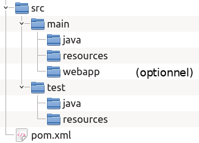
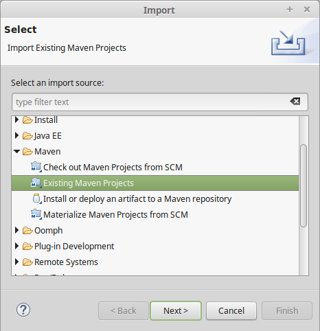
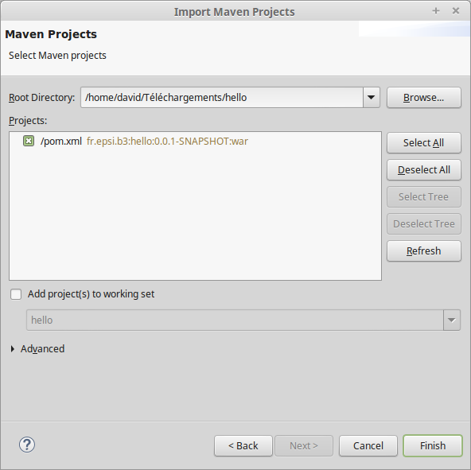
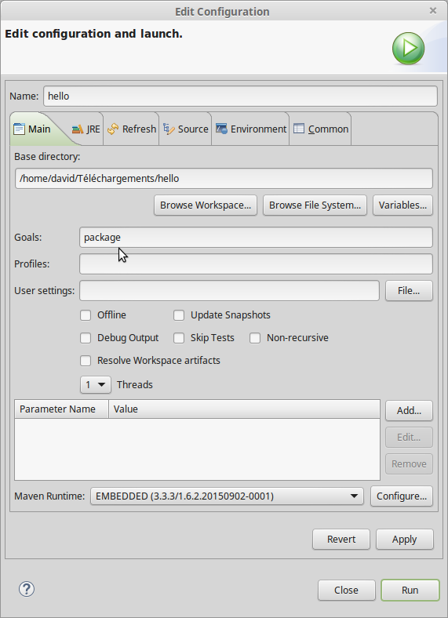

Introduction à Maven¶
Avant d’aborder le développement d’application, nous allons introduire un outil supplémentaire : Maven.
Maven est un outil open source de la communauté Apache entièrement écrit en Java. Il permet d’automatiser la gestion et la construction d’un projet Java : ce que l’on appelle communément un outil de build.
Maven se présente comme un exécutable en ligne de commande mais il est également intégré nativement dans les IDE les plus courants dans le monde Java : Eclipse, Intellij IDEA, NetBeans.
Pourquoi utiliser Maven ?¶
Nous avons vu qu’il est possible de créer et d’exécuter des projets Java directement dans un IDE comme Eclipse. Alors pourquoi utiliser Maven ? Si un IDE peut suffire pour gérer des projets simples, cette solution s’avère rapidement limitée :
Comment partager mon projet avec d’autres développeurs quand ils n’ont pas exactement la même configuration de poste que la mienne et qu’ils n’utilisent pas le même IDE que moi ?
Comment compiler et tester mon projet en dehors d’un IDE (par exemple dans un processus d’intégration continue) ?
Comment automatiser certaines tâches répétitives et limiter ainsi les erreurs ou les oublis ?
Pour résoudre tous ces problèmes (et d’autres encore), le plus simple est d’utiliser un outil tel que Maven.
Caractéristiques principales de Maven¶
L’outil de construction de projet le plus célèbre est sans aucun doute make. Make permet de définir des tâches avec des commandes associées et des dépendances entre ces tâches.
Maven part d’une approche très différente : il découpe le cycle de construction du projet en phases pré-définies et le développeur peut paramétrer ou ajouter des tâches à effectuer automatiquement pour chacune des phases. Les principales phases dans Maven sont :
compile : compilation du code source du projet
test : compilation du code source des tests et exécution des tests
package : construction du livrable (pour une application Web, il s’agit de l’archive WAR)
Maven ajoute la possibilité de gérer automatiquement les dépendances logicielles. Pour développer des applications Java EE, nous allons avoir besoin de bibliothèques externes (les fichiers .jar en Java). Plutôt que d’aller les télécharger une à une depuis le Web et de les ajouter dans Eclipse, nous allons signaler à Maven l’identifiant des dépendances dont nous aurons besoin et il va se charger pour nous de les télécharger depuis un référentiel centralisé (Maven central repository), de les stocker dans un cache sur la machine et de les associer à notre projet.
Enfin les concepteurs de Maven ont adopté une approche normative afin de garantir une homogénéité entre les projets. Ainsi un projet Maven se conforme à une organisation assez stricte des répertoires et des fichiers.
Il existe d’autres outils de construction de projet en Java. Ant, également promu par la communauté Apache, a été (et reste) beaucoup utilisé. Ant suit un principe très proche de Make. Gradle est un autre outil de construction bien connu des développeurs Android.
Installation de Maven (optionnel)¶
Note
Maven est nativement intégré dans tous les IDE Java (Eclipse, IntelliJ, NetBeans). Il est tout de même utile de disposer de cet outil en ligne de commande. Par exemple si nous voulons mettre en place une plate-forme d’intégration continue, en installant Maven sur le système, nous pourrons gérer la construction de nos projets sans avoir besoin d’un IDE.
Maven se présente sous la forme d’une archive à télécharger à http://maven.apache.org.
Une fois téléchargé, vous pouvez extraire ou vous voulez et ajouter le
répertoire apache-maven-3.6.3/bin dans votre chemin d’exécution.
Si vous utilisez une machine GNU/Linux, vous trouverez certainement maven dans les dépôts logiciel. Pour une distribution de type Debian, vous pouvez utiliser la commande :
sudo apt install maven
Un premier projet avec Maven¶
Un projet Maven possède toujours un fichier pom.xml à la racine du
projet. Ce fichier XML est le descripteur du projet et contient toutes
les informations nécessaires à Maven pour gérer le cycle de vie du
projet.
Le nom du fichier pom.xml vient de POM (Project Object Model).
Téléchargez et décompressez maintenant l’archive hello.zip.
Cette archive contient le projet Maven minimal pour l’application qui va nous servir d’exemple.
Maven impose une arborescence minimale des fichiers afin de garantir une homogénéité entre tous les projets.

- pom.xml
A la racine du projet, on trouve le fichier
pom.xml, le descripteur du projet pour Maven.- src/main
Ce répertoire contient les fichiers de l’application. On trouve au moins le sous répertoire java contenant les sources Java. Le sous répertoire resources accueille les fichiers qui ne sont pas des sources Java mais qui doivent être présents avec les fichiers compilés dans l’application finale (il s’agit souvent de fichiers de configuration). Enfin pour une application Web, le sous répertoire webapp correspond à la racine du site Web.
- src/test
Ce répertoire contient les fichiers utilisés pour tester l’application. On trouve le sous répertoire java contenant les sources Java des tests unitaires. Le sous répertoire resources accueille les fichiers qui ne sont pas des sources Java mais qui sont nécessaires à l’exécution des tests (il s’agit souvent de fichiers de configuration pour les tests).
Il existe un dernier répertoire à connaître, le répertoire target. Il s’agit du répertoire de travail de Maven. Ce répertoire est créé automatiquement par Maven pour stocker tous les fichiers de travail : les classes compilées, les fichiers sources générés, le livrable final, les rapports d’exécution des tests…
Note
Vous pouvez supprimer le répertoire target à tout moment puisque
les fichiers qu’il contient pourront être recréés par Maven. Si vous utilisez
un gestionnaire de source comme Git, il ne sert à rien de suivre les fichiers
présents dans ce répertoire.
Le fichier pom.xml¶
Le fichier pom.xml est le descripteur de projet pour Maven. Il s’agit
d’un fichier XML présent à la racine du projet qui est lu par Maven pour
lui fournir les informations du projet.
Le contenu du fichier pom.xml du projet hello ressemble à :
<?xml version="1.0" encoding="UTF-8"?>
<project xmlns="http://maven.apache.org/POM/4.0.0" xmlns:xsi="http://www.w3.org/2001/XMLSchema-instance"
xsi:schemaLocation="http://maven.apache.org/POM/4.0.0 https://maven.apache.org/xsd/maven-4.0.0.xsd">
<!--
La version du format du fichier pom.
Actuellement la dernière version est la 4.0.0.
-->
<modelVersion>4.0.0</modelVersion>
<!--
La référence à un autre fichier pom.xml que l'on appelle le pom parent.
Il fournit une configuration par défaut qui est importée. Ce fichier
parent est automatiquement téléchargé téléchargé depuis un dépôt Maven
en ligne.
-->
<parent>
<groupId>org.springframework.boot</groupId>
<artifactId>spring-boot-starter-parent</artifactId>
<version>2.4.0</version>
<relativePath/>
</parent>
<!--
Le group ID de l'application. Le group ID
s'apparente à un package Java mais pour un projet. Il évite
une collision de nom dans le cas de deux projets ayant le même identifiant
puisqu'ils peuvent avoir des group ID différents.
Ainsi si deux projets ont hello comme artifactId et qu'ils ont des group ID
différents, ils sont considérés comme étant des projets différents.
-->
<groupId>dev.gayerie.demo</groupId>
<!--
L'identifiant unique du projet
-->
<artifactId>hello</artifactId>
<!--
La version de notre projet. Maven gère le versionnage
afin de permettre le suivi des évolutions d'un projet.
Ici, le suffixe "-SNAPSHOT" indique à Maven que le projet
est en cours de développement pour cette version.
-->
<version>0.0.1-SNAPSHOT</version>
<!--
Le nom du projet pour les humains (Maven n'interprète pas cette information)
-->
<name>hello</name>
<!--
La description du projet pour les humains (Maven n'interprète pas cette information)
-->
<description>Demo project for Spring Boot</description>
<!--
Les propriétés du projet qui sont utilisées par les plugins Maven
ou par le fichier pom.xml
-->
<properties>
<java.version>11</java.version>
</properties>
<dependencies>
<!--
Les dépendances omises ici pour simplifier.
Les dépendances sont toutes les bibliothèques Java nécessaires
au projet. Elles sont automatiquement téléchargées depuis
un dépôt Maven en ligne.
-->
</dependencies>
<!--
Cette section permet d'ajouter des plugins pour modifier la
construction du projet.
-->
<build>
<plugins>
<plugin>
<groupId>org.springframework.boot</groupId>
<artifactId>spring-boot-maven-plugin</artifactId>
</plugin>
</plugins>
</build>
</project>
Ce fichier pom.xml donne les informations à Maven :
Le projet s’appelle dev.gayerie.demo:hello
La version actuelle est la 0.0.1 et il s’agit d’une version de travail
Le projet est écrit pour Java 11
La documentation complète du format du fichier pom.xml est disponible à
cette adresse.
Import du projet Maven dans Eclipse¶
Eclipse intègre nativement Maven et permet donc de développer des projets basés sur Maven.
Pour intégrer le projet hello dans votre espace de travail Eclipse, choisissez le menu File > Import… puis sélectionnez dans la section Select an import source le type Maven > Existing Maven Projects.

Cliquez sur Next. Dans l’écran Import Maven Projects, cliquez sur
Browse… pour sélectionner le répertoire contenant le fichier pom.xml
de votre projet. Ensuite, cliquez sur Finish.

Le projet Maven est maintenant intégré dans Eclipse.
Test de l’application¶
Trouvez la classe HelloApplication dans le projet. Elle contient une méthode
main qui vous pouvez lancer. Le programme démarre un serveur Web qui
sera accessible à l’adresse
Important
Si l’application échoue au démarrage, c’est peut-être que vous avez déjà
un service qui écoute sur le port 8080. Dans ce cas, il faut ajouter une
configuration dans notre projet pour changer le port par défaut de
lancement du serveur. Par exemple, utilisons à la place le port 9090.
Éditez le fichier src/main/resources/application.properties et
ajoutez dedans :
server.port = 9090
Démarrez votre application et maintenant, l’application est disponible à l’adresse :
Gérer le projet avec Maven¶
Si vous avez installer Maven en ligne de commande, vous pouvez utiliser la
commande mvn depuis le répertoire contenant le fichier pom.xml
pour réaliser les opérations sur un projet.
Maven crée le répertoire de travail nommé target dans lequel il stocke
les fichiers produits (y compris le fichier final de l’application)
nettoyer le répertoire de travail target
mvn clean
compiler les sources
mvn compile
compiler les sources, les tests unitaires et exécuter les tests unitaires
mvn test
compiler les sources, les tests unitaires, exécuter les tests unitaires et créer le fichier final de l’application
mvn package
Note
Vous pouvez aussi utiliser le script mvnw (Maven Wrapper) qui est
disponible dans le répertoire du projet. Si nécessaire, ce script va commencer
par télécharger et installer Maven localement.
Sous Windows :
mvnw clean
Sous MacOS ou Linux :
./mvnw clean
Important
Pour que les commandes Maven fonctionnent, il faut qu’un JDK version 11 ou
supérieure soit disponible par défaut dans le chemin d’exécution des fichiers.
Si ce n’est pas le cas, vous pouvez déclarer la variable d’environnement
JAVA_HOME qui doit contenir le chemin menant au répertoire d’installation
du JDK sur votre disque.
Exécution de Maven dans Eclipse¶
Même si vous n’avez pas installé Maven en ligne de commande, vous exécutez la version embarquée dans Eclipse. Faites un clic droit sur le nom du projet et sélectionnez Run As… > Maven build…. Dans la fenêtre Edit Configuration, saisissez la cible Maven (goal) que vous voulez exécuter (Cf. ci-dessous) et cliquez sur Run.

Après l’exécution de la cible « package », Maven aura créé le fichier final de
l’application dans le répertoire de travail target.